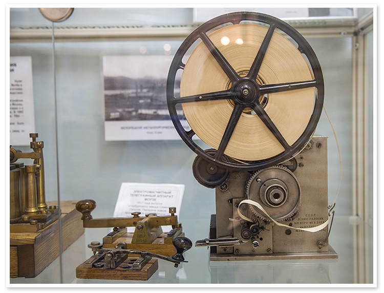

История беспроволочного телеграфа
Web-Quest
Введение
Беспроводной телеграф
Основателем беспроводного телеграфа стал русский ученый Александр
Степанович Попов. Впервые он был представлен на встрече
физико-химического общества. Прибор мог передавать информацию на основе
радиоволн. Спустя два года беспроводной прибор был опробован в реальных
условиях. Первая радиотелеграмма была отправлена с берега на морской
корабль. Чуть позже прибор был усовершенствован и передавал сигналы с
помощью кода Морзе. Таким образом, связь через телеграф стала доступна
не только на суше, но и на воде.
Радиоволны лежат в основе радио- и
телефонной связи. Первое испытание серьезными условиями беспроводной
телеграф прошел на военно-морской базе. Морской корабль "Генерал-адмирал
Апраксин" у берегов финского залива сел на мель. Благодаря радиосвязи
информация поступила в штаб. Под руководством А. С. Попова прошла
спасательная операция. Ученый при этом отвечал за работоспособность
связи. Ледокол Ермак смог освободить корабль, который почти 4 месяца
пробыл на льду. Подрывники и капитан ледокола имели постоянную связь,
поэтому операция прошла успешно. Спасшийся корабль участвовал в военных
сражениях в 1904-1905 годах.
Основателем радиосвязи в России считается А. С. Попов, в это же время англичанин Маркони создал радиоприемник и получил на него патент. Стоит отметить, что его прибор очень походил на изобретение Попова, описание которого несколько раз печаталось в известных журналах.
Принцип работы

Сообщения телеграфной связи передаются с определенной скоростью. За
единицу скорости телеграфирования приняли Бод. Она определяет количество
переданных телеграфных посылок за 1 с. Принцип работы телеграфной связи
основан на действии электромагнита, по которому протекает ток. Энергия
электрического поля преобразуется в механическую. Ток протекает по
обмотке, появляется магнитное поле, которое притягивает якорь.
Сердечник, соединившись с якорем вращается вокруг своей оси. Если ток не
поступает, то магнитное поле исчезает, и якорь возвращается в исходную
позицию.
Линейное реле может использоваться для повышения надежности
аппарата. В этом случае он реагирует на малейшее колебание. Для передачи
кодовой информации может использоваться постоянный или переменный ток.
Если ток постоянный, то посылка может передаваться одно- или
двухполюсным способом. При появлении в линии тока одного направления
говорят об однополюсной передаче данных. Если при передаче сообщения
происходит подача тока одного направления, а при паузе - другого, то
работает двухполюсный способ. Синхронный метод работает при условии
одновременной передачи и получении информации. Стартостопный метод имеет
три вида отправки - сама информация, старт и стоп. Передача
осуществляется циклами, которые начинаются после подачи сигнала "старт"
и заканчивается при появлении сигнала "стоп". Постоянный ток не
используют на дальние расстояния.
Для увеличения расстояния силу тока
делают больше или подключают импульсную трансляцию. Но у этих способов
есть недостатки. Увеличить силу тока не всегда получается из-за
технических проволочек. А импульсная передача может искажать информацию.
Наибольшее применение получило частотное телеграфирование. Переменный
ток позволяет отправлять информацию без ограничения по дальности.
Увеличивается количество одновременно передаваемых телеграмм.
Под дальностью телеграфной связи понимают максимальное расстояние, при котором не происходит искажение информации и не требуется промежуточная станция. Телеграф используется для передачи сообщений между различными абонентами. Передача может осуществляться через оператора или самостоятельно, если абонент включен в телеграфную связь.
Преимущества:
После появления телеграфа и массовой популярности перед простыми обывателями виднелись только положительные стороны связи. По сравнению с другими средствами коммуникации, телеграф обладает преимуществами. По этим причинам он до сих пор жив в России и пользуется популярностью в государственных учреждениях и в отдаленных регионах, где провести Интернет не представляется возможным.
Характеристика телеграфной связи:
Основными положительными качествами телеграфа являются:
Недостатки:
Недостатки телеграфной связи, которые особо заметны после появления других средств связи:
 |
 |